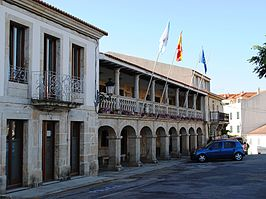

O ROSAL
Rosal un municipio español situado en la parte meridional de la comarca del Bajo Miño, en la provincia de Pontevedra, comunidad autónoma de Galicia.
Sitios para vistar en O rosal
- Muiños folon e picon
- Bodegas quinta couselo
- Bodegas terras gauda
Restaurante en O rosal
- Restaurante Paco
- Taperia Bolas
- Bocateria Lilo
